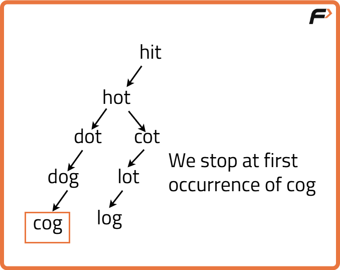

Word Ladder - I : G-29
Problem Statement: Given are the two distinct words startWord and targetWord, and a list denoting wordList of unique words of equal lengths. Find the length of the shortest transformation sequence from startWord to targetWord..
In this problem statement, we need to keep the following conditions in mind:
- A word can only consist of lowercase characters.
- Only one letter can be changed in each transformation.
- Each transformed word must exist in the wordList including the targetWord.
- startWord may or may not be part of the wordList
Note: If there’s no possible way to transform the sequence from startWord to targetWord return 0.
Examples
Example 1:
Input:
wordList = {"des","der","dfr","dgt","dfs"}
startWord = "der", targetWord = "dfs"
Output:
3
Explanation:
The length of the smallest transformation sequence from "der" to
"dfs" is 3 i.e. "der" -> (replace ‘e’ by ‘f’) -> "dfr" -> (replace ‘r’ by ‘s’) -> "dfs". So, it takes 3 different strings for us to reach the targetWord. Each of these strings are present in the wordList.
Example 2:
Input:
wordList = {"geek", "gefk"}
startWord = "gedk", targetWord= "geek"
Output:
2
Explanation:
The length of the smallest transformation sequence
from "gedk" to "geek" is 2 i.e. "gedk" -> (replace ‘d’ by ‘e’) -> "geek"
So, it takes 2 different strings for us to reach the targetWord.
Each of these strings are present in the wordList.
Disclaimer: Here is the practice link to help you assess your knowledge better. It's highly recommend trying to solve it before looking at the solution.
Approach
Algorithm
The problem aims to transform a startWord into a targetWord by
changing one character at a time, with each intermediate word present in a given
wordList. The shortest sequence length is sought.
We can model this problem as a graph:
- Each word is a node.
- An edge exists between two words if they differ by exactly one character.
startWord to
targetWord.
- Initialize a queue with a pair
{startWord, 1}representing the word and its current transformation steps. - Insert all words from
wordListinto aunordered_setfor O(1) lookups. - While the queue is not empty:
- Pop a word and its step count.
- If this word is the
targetWord, return the step count. - For each character in the word, try replacing it with all letters 'a' to 'z':
- If the new word exists in the set, erase it from the set and push it into the queue with steps + 1.
- If no transformation sequence is found, return 0.

Code
#include <bits/stdc++.h>
using namespace std;
class Solution {
public:
// Function to calculate the shortest transformation sequence length
int wordLadderLength(string startWord, string targetWord, vector<string>& wordList) {
// Queue for BFS storing {current word, steps taken}
queue<pair<string, int>> q;
q.push({startWord, 1});
// Set for quick lookup and deletion
unordered_set<string> st(wordList.begin(), wordList.end());
st.erase(startWord);
while (!q.empty()) {
string word = q.front().first;
int steps = q.front().second;
q.pop();
// If target word is found, return steps
if (word == targetWord) return steps;
// Try changing every character in the current word
for (int i = 0; i < word.size(); i++) {
char original = word[i];
for (char ch = 'a'; ch <= 'z'; ch++) {
word[i] = ch;
if (st.find(word) != st.end()) {
st.erase(word);
q.push({word, steps + 1});
}
}
word[i] = original;
}
}
// If no sequence exists
return 0;
}
};
int main() {
vector<string> wordList = {"des", "der", "dfr", "dgt", "dfs"};
string startWord = "der", targetWord = "dfs";
Solution obj;
cout << obj.wordLadderLength(startWord, targetWord, wordList) << endl;
return 0;
}
Complexity Analysis
Time Complexity: O(N * L * 26), where N is the number of words in the list and L is the length of each word. For each word, we attempt to change each of its L characters to 26 possible letters.
Space Complexity: O(N * L), for the set storing all words and the queue used for BFS.